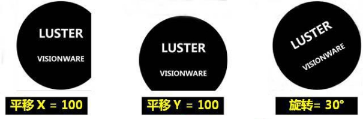
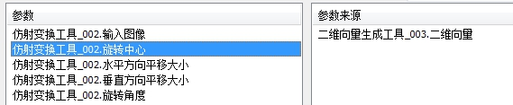
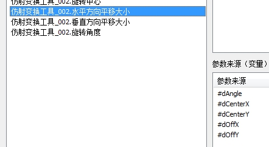

仿射变换工具是常用的预处理工具之一，主要对输入图像进行仿射变换，输出仿射变换后图，以便对其进行后续处理。支持的仿射变换操作有：平移、旋转。

| 分类 | 参数名称 | 参数描述 |
|---|---|---|
| 属性窗口 | 裁剪为原图像相同尺寸 | 是：仿射变换后的图像和原图大小一样，如果仿射变换操作引起图像大小改变，最终结果会被裁剪为和原图像一样大小；否：仿射变换后的图像大小可以自定义。通过“输出图像宽度”和“输出图像高度”自定义。 |
| 输出图像宽度 | 用户自定义输出图像宽度。只在“裁剪为原图像相同尺寸”属性为“否”时起作用。 | |
| 输出图像高度 | 用户自定义输出图像高度。只在“裁剪为原图像相同尺寸”属性为“否”时起作用。 | |
| 镜像 | 变化后的图像做无、水平、垂直、水平垂直的镜像操作。 | |
| 是否缩放 | 按照缩放点，进行X轴和Y轴缩放。 | |
| x缩放系 | 按X轴缩放系数。 | |
| y缩放系 | 按y轴缩放系数。 | |
| Center X | 中心X轴坐标。 | |
| Center y | 中心Y轴坐标。 | |
| 旋转角度类型 | 角度：数据链中“旋转角度”参数单位为度；弧度：数据链中“旋转角度”参数单位为弧度； | |
| 图像窗口 | Edit | 显示原图像。 |
| 数据链 | 输入图像 | 需要进行仿射变换操作的图像； |
| 旋转中心 | 二维向量类型，向量元素为double类型。表示旋转操作的中心。 | |
| 水平方向平移大小 | double类型。表示水平方向偏移量，单位是像素； | |
| 垂直方向平移大小 | double类型。表示垂直方向偏移量，单位是像素； | |
| 旋转角度 | double类型。表示旋转的角度，逆时针为正，单位与属性窗口“旋转角度类型”相同。 | |
| 高级界面 | 无 | 无 |
| 分类 | 参数名称 | 参数描述 |
|---|---|---|
| 监视窗口 | 输入图像 | 输出原始图像宽度、高度、像素信息； |
| 输出图像 | 输出放射变换后图像的宽度、高度、像素信息； | |
| 执行结果 | 工具执行结果； | |
| 执行时间 | 工具执行时间。 | |
| 图像窗口 | Result | 输出仿射变换后的图像； |
| 自定义视图 | 输出仿射变换后的图像； | |
| 执行结果 | 显示工具执行结果，执行成功显示“OK”，执行失败显示“NG”，同监视窗口的执行结果参数。 | |
| 数据链 | 输出图像 | 输出经过仿射变换之后的图像，供其他工具使用。 |
无


参见“\Samples\仿射变换工具.gvp”。